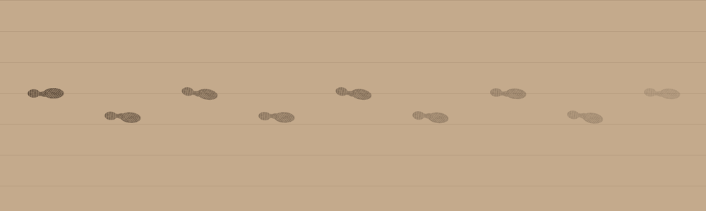

The goal
A lot of Farsight happens in the rain. When you come back inside, you track water in with you, so the floor quietly shows where you've been.
We also use the same footprints for scares, like wet prints showing up where nobody's standing.
How it works
A script keeps track of how wet your shoes are. Each print is a URP decal using a shoe sole texture, so it sits on whatever floor is underneath.
1. Soaking and drying
Walking around outside gets your shoes wet, using the same "is there a roof above me" check as the rain on the glasses. They're soaked through in about two and a half seconds of rain. Once you're inside, the wetness drops with distance walked, and after about 14 metres your shoes are dry and stop leaving prints.
2. Placing a print
Every 42 cm you walk indoors, the next foot puts down a print. Feet sit 6.5 cm either side of where you're walking, and the left foot is just the right sole flipped. Each print gets a few degrees of random turn, plus a little toe-out, so the trail doesn't look too perfect, and its strength follows how wet your shoes still are.

Each print goes on the nearest floor below you, ignoring your own collider. There's a fixed pool of 120 prints, and when they run out the oldest one gets reused.
3. Prints with nobody there
The same code that places your footprints can be called on its own, so scripted moments use it to lay a trail along a path, like someone you can't see just walked past.
The trail was drawn with Python from the script's numbers and the game's sole texture. The clip at the top is a scripted trail in the game, with an extra light over the floor so you can see the prints at this size.